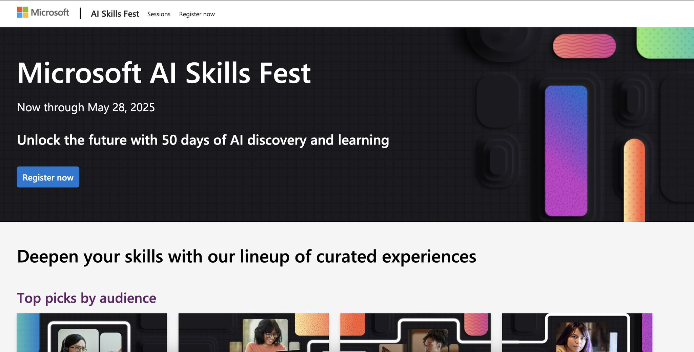

רוצים להתמקצע יותר ב-AI ולא יודעים מאיפה להתחיל?
פורסם במקור ב LinkedIn
רוצים להתמקצע יותר ב-AI ולא יודעים מאיפה להתחיל?
מיקרוסופט השיקה השבוע את AI Skills Fest - מרתון של 50 ימים (בחינם) עם סדנאות פרונטליות, אירועים חיים, האקתונים, ואפילו ניסיון לשבור שיא גינס עולמי:
במסגרת האירוע, מיקרוסופט רוצה לשבור שיא גינס עבור מספר המשתמשים הגדול ביותר שהשתתפו בשיעור בינה מלאכותית מקוון רב-שלבי בתוך 24 שעות
אז אם אתם מוכנים ופנויים לקצת קצב גבוה, קהילה לומדת, ואתגר אמיתי לדחוף את עצמך קדימה - זה הזמן להרשם
🧠 אם אתם מפתחים, אנשי מוצר, או פשוט סקרנים שרוצים להבין איך AI יכול לשנות את הדרך שבה אתם עובדים - לדעתי זאת הזדמנות.
📌 ההרשמה פתוחה כאן: https://lnkd.in/deW6UtVU
#microsoft #ai
